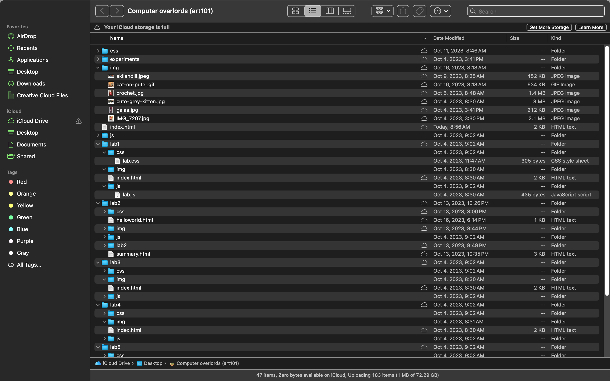

The challange for todays lab was to orginize our files accordingly and keep them well managed and maintained.
To be quite frank I feel that the second lab helped me undertsand the foundations on how to build a website, so i fellt like I was doing that process once more. one of the difficult challanges I faced was in lab 2 I accidentaly created more then one css file which made it a little confusing but I orginized it well.
Here are my files that I used to create this website:
